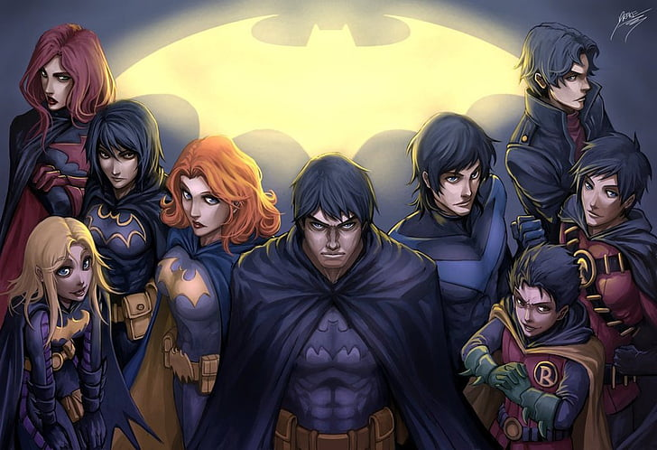

História e Evolução:
A Família Bat, originalmente formada por Batman e Robin, expandiu-se ao longo dos anos, incorporando novos membros com diferentes habilidades e origens. A década de 1940 marcou a introdução de Dick Grayson como Robin, o primeiro parceiro de Batman. Nas décadas seguintes, novos heróis como Batgirl, Alfred Pennyworth, Asa Noturna e outros se juntaram à família, expandindo seu papel na luta contra o crime.
A Bat-Família é um grupo de heróis que operam em Gotham City e arredores, unidos por sua missão de proteger os inocentes e combater o crime. Liderados por Batman, esses heróis representam diferentes origens, habilidades e personalidades, mas compartilham um ideal comum: justiça para todos.
Membros da Bat-Família
- Dick Grayson
- Jason Todd
- Tim Drake
- Damian Wayne
- Alfred Pennyworth
- Bruce Wayne
- Batwoman